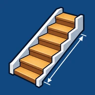
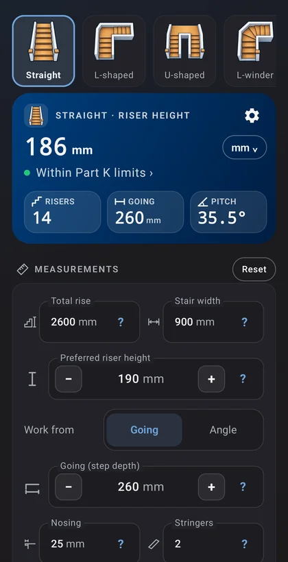

StairCalc
Type the floor-to-floor rise, the riser height you want and the going, and StairCalc works out the stair: the step count, the exact riser height, the pitch, a cut list and a drawing you can turn in 3D. For carpenters, joiners and builders who want the figures before the timber is cut.

Every common stair, worked out
Eight stair types
Straight flights, L-shaped and U-shaped stairs with a landing, L, U and C winders that turn on tapered steps, spiral stairs round a centre post, and baluster spacing along a raked rail or a fixed number per tread.
The figures you cut to
Risers and the exact riser height, the total run, the stringer rake length, the pitch and the throat depth, with framing-square settings: rise on the tongue, going on the body.
A cut list, and the timber to buy
Stringers, treads, risers and landing boards with their quantities and sizes, for cut or housed stringers at your board thicknesses, then packed into standard stock lengths with the saw cuts allowed for.
A 3D model with the sizes on it
Turn and tilt the stair in 3D with its main sizes marked, choose a wood finish, or open it full screen. Side views and plans redraw as you type.
A building regulation check
Compare the stair with Approved Document K (England) or the US IRC R311.7: rise and going, pitch, 2R + G, headroom, nosing, winders measured where the rules say, and baluster gaps, each check naming its paragraph.
It says what would pass
When a check fails, StairCalc points at the figure to change and offers a layout that passes, one tap to use it.
Free, and Pro once
The straight stair is free in full, with the regulation check and sharing the cut list as text. A one-time Pro unlock adds the other stair types, the timber list, PDF and CSV, and full-screen 3D.
Private
No account and no sign-in. Your measurements stay on your phone. No analytics, no tracking, no ads; Google Play handles the optional purchase.
StairCalc is a planning aid. Check every figure and measure on site before you cut or build, and agree the design with your Building Control body or local building department. It does not replace a qualified architect, engineer or builder.